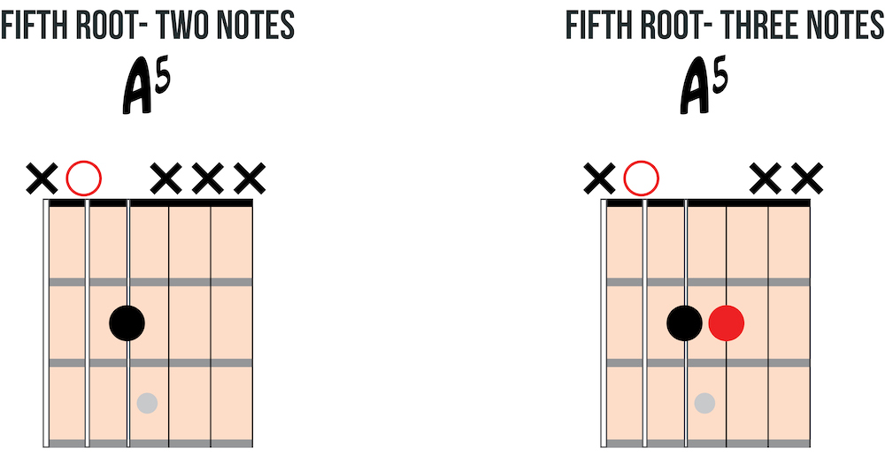
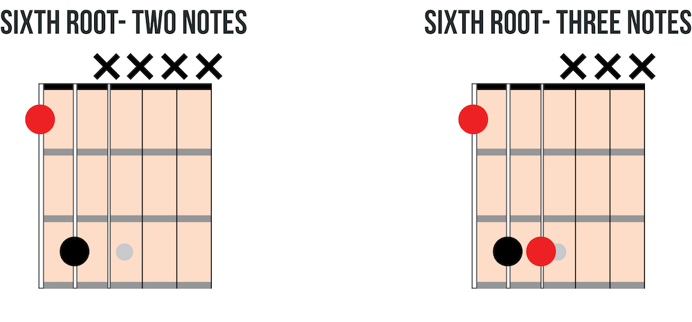
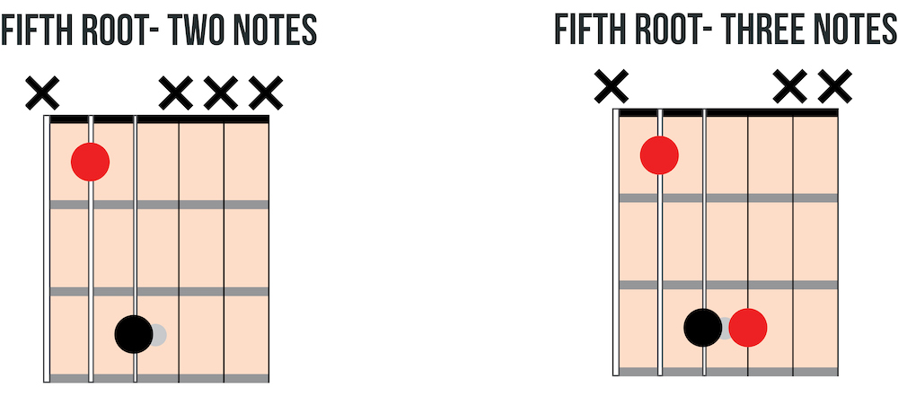

Power chords
Power chords are moveable chord shapes that will not only prepare you for barre-chords but also allow you to rock out. We will learn open and fretted power chords with sixth and fifth string roots. A power chord is the interval of a "perfect fifth." The power chord shape can be played with or without a second root note on top. Power chords are notated by the root note followed by a 5. Use power chords to play rock (especially punk rock) styles.
Open power chords
Like 'open chords', these power chords utilize open strings. Practice open power chords with different finger combinations. These fingering options will be useful later. The root of the chord is the lowest-sounding open string and is marked red below.


Fretted power chords
Fretted power chords use the same shape as open power chords but are moved up the neck. Shift the shape up the neck and use the first finger to play the previously open strings. Like the open power chord, the fretted power chord has both a two and a three note fingering. The root is notated in red.
